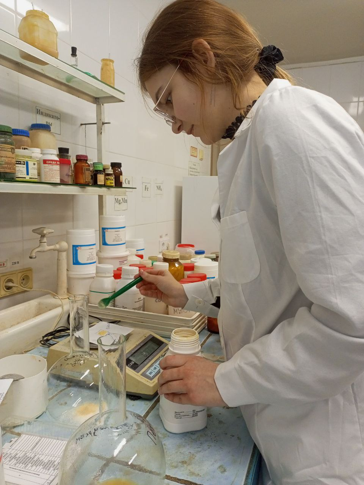
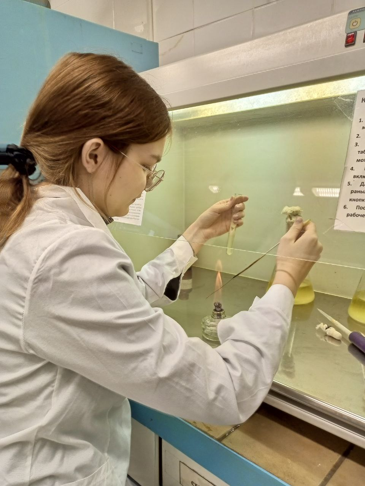
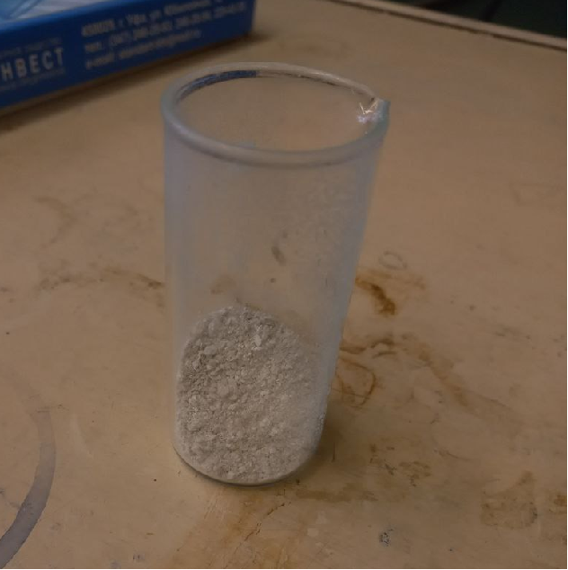

- Приготовление питательной среды для культивирования дрожжей вида Yarrowia lipolytica
- Состав питательной среды: этиллаурат – 10 г/л, пептон – 2,5 г/л, NaCl – 0,5 г/л, KH2PO4 – 0,6 г/л, K2HPO4 – 0,4 г/л, MgSO4 – 0,5 г/л, CaCl2 – 0,05 г/л, дрожжевой экстракт – 2 г/л.
- После приготовления питательная среда была проавтоклавированна.  - Посев культуры микроорганизмов
- Объектом исследования являлась культура гриба Yarrowia lipolytica. С агаризованной питательной среды был проведен пересев данной культуры на приготовленную жидкую питательную среду. Культура выращивалась на глюкозо-пептонной среде на качалке (160 об/мин) при температуре 29 °С в течении 7 суток.
- Выделение гидрофобинов
- После культивирования дрожжей, жидкость с питательной средой и микроорганизмами вспенивали для последующего выделения гидрофобинов.
- Раствор вспенивали с помощью компрессора, после чего образовавшуюся пену отделяли и растворяли в 95 % растворе этанола. Нерастворенные компоненты и частицы биомассы удаляли центрифугированием при 6 000 об/мин. После этого этиловый спирт сливали, а остатки влаги из экстракта удаляли путем естественного испарения на воздухе. - Влияние гидрофобинов на вязкость подсолнечного масла
- С помощью вязкозиметра было определено влияние гидрофобинов на вязкость подсолнечного масла при температуре 24°С.
- Положительный результат показали гидрофобины, выделенные из дрожжей вида Yarrowia lipolytica, которые культивировались на среде, описанной в которой в качестве источника углевода вместо глюкозы был добавлен этиллаурат.
- Гидрофобины были добавлены в количестве 1% масс. При их добавлении вязкость масла увеличилась на 3,8 мПа.
- Таким образом, лучшим субстратом для культивирования дрожжей с целью выделения гидрофобинов является этиллаурат.
Предыдущая страница